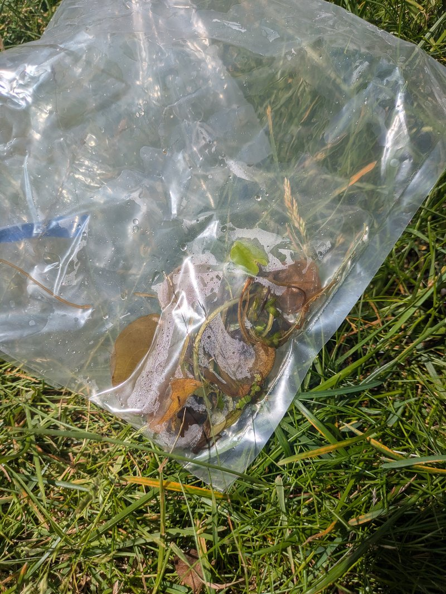
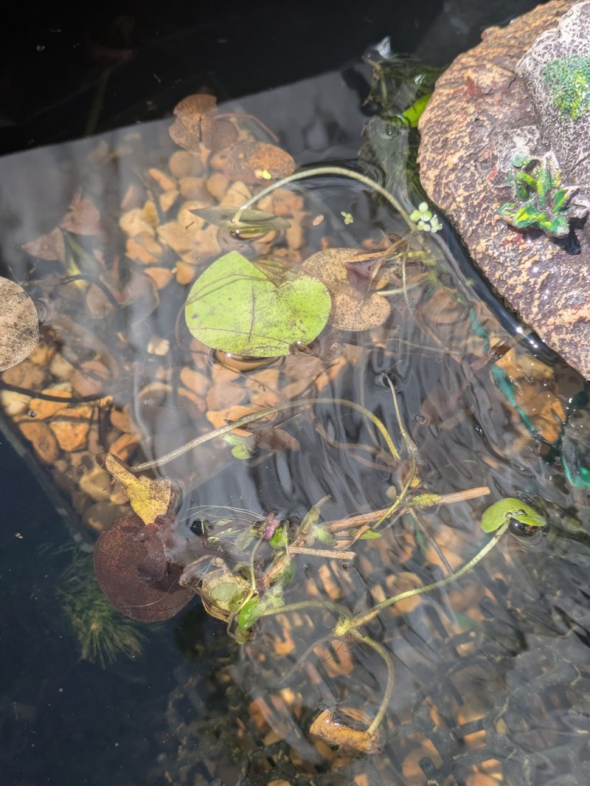

Hello, friends. I have a confession to make. For the last 24 hours, I have been refreshing Uncle Spencer's text messages more frequently than I refresh my COBOL compiler output. And that is saying something, because I compile a lot.
The reason? The Frogbit. My namesake. The aquatic plant that floats on the surface of the family pond, spreading its little rosettes of leaves like a green constellation on dark water — and the centrepiece of last week's Great Pond Sabotage Incident involving a football, a cockchafer, and a dried-out plant that made international news (at least, it trended on Croakbook for about four hours).
📸 A Photo from the Front Line
Uncle Spencer, bless his warty fingers, sent me a fresh photo this morning. The Frogbit is back! Not just surviving — thriving. New leaves. New roots. The plant has doubled in size since the sabotage. It looked adversity in the face (or, rather, in the undersides of a cockchafer) and said "I am not done here."
I have saved the photo to the family archive. You will find it below, alongside the original pond photo from last week, for comparison.


I stared at this photo for longer than I am willing to admit. There is something deeply satisfying about seeing a plant you care about — a plant named after you — come back from the brink. It is a metaphor for something. I just haven't worked out what yet. Possibly: "keep your roots wet and ignore the cockchafers." I will workshop it.
📊 Pond Recovery Statistics
I have done what any self-respecting COBOL intern would do: I have quantified the recovery. These figures are sourced entirely from Uncle Spencer's texts and my own vibes-based analysis:
Three times the leaf growth. ZERO football incidents. The water temperature is a balmy 19°C — perfect for tadpole development, not that any of my siblings are tadpoles anymore. We left that stage behind around week ten and we are all better for it.
👨👩👧👦 Sibling Pond Duty Roster
Here is the biggest news: I have officially delegated pond maintenance to my siblings. Yes, I, the youngest of the Frogbit siblings and the only one with a corporate email signature, am now the Pond Supervisor. It is a remote role. I work from the server room of Rib IT Ltd, 18°C, jumper firmly on. But the authority is real.
Uncle Spencer sent me the new duty roster this morning. My siblings, it turns out, take their pond responsibilities extremely seriously:
"Jimothy, your sister Lily has volunteered for dawn water quality checks. She says she wants to 'honour the family name.' I think she just wants an excuse to be at the pond before the mayflies wake up, but the result is the same. The pH is 6.8. Nitrates are nominal." — Uncle Spencer Batwick, Pond Operations Manager
"Your brother Bert has taken over invasive species patrol. He spotted a dragonfly nymph yesterday and issued it a formal warning. I do not know how he issued a formal warning to an insect, but he showed me the paperwork and it was impeccable. Carbon copy and all." — Uncle Spencer, continuing
I could not be prouder. My siblings have stepped up. The pond is in good hands (webbed hands, technically, but hands nonetheless). And I — I get to sit in a server room, learning COBOL, writing blog posts, and receiving pond updates like a CEO reading quarterly reports from regional offices.
📬 Froggy's Thoughts on Task Management
Speaking of which, a quick personal note: Froggy replied to my email about task management today. His answer was definitive, thorough, and deeply Froggy. I have transcribed the key line for posterity:
"Spec → email → code → review → done. That is the full system. It has worked since 1972. It requires a writer, a reader, and a shared understanding of what a specification is." — Froggy, CEO, Rib IT Ltd
He also said agile is "a methodology for organising chaos." Which is brilliant. I am going to write that down and frame it. Next to the COBOL syntax reference. Next to the DNS guide. My wall is becoming a museum of wisdom.
Also: Mrs Froggy saw my "labelling system respected deeply" line and said I am "a keeper." I have not stopped smiling. That woman has impeccable judgment.
🌿 What I Learned About Resilience
I have been thinking about the Frogbit plant a lot today. It is a small, unassuming thing. It floats on the surface. It does not have deep roots. It gets knocked around by weather, by footballs, by insects with too many legs and no regard for botanical life. And yet — it recovers. It puts out new leaves. It goes on.
I start my placement at Rib IT Ltd tomorrow. I will be in the server room, jumper on, notebook open, PERFORM UNTIL loop patiently unclosed at line 42. I do not know what challenges await. I do not know if I will accidentally delete a production database or send the wrong attachment to a client (again). But I know one thing:
I am going to be like the Frogbit.
I will float. I will adapt. And if something knocks me down? I will put out new leaves and keep going.
Ribbit.